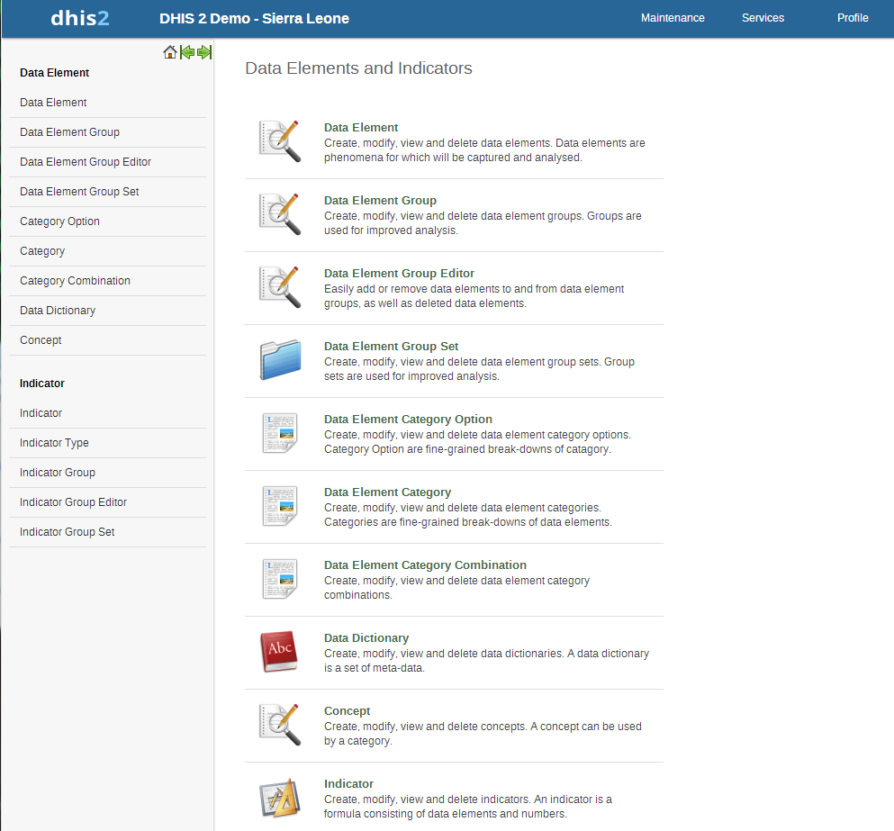
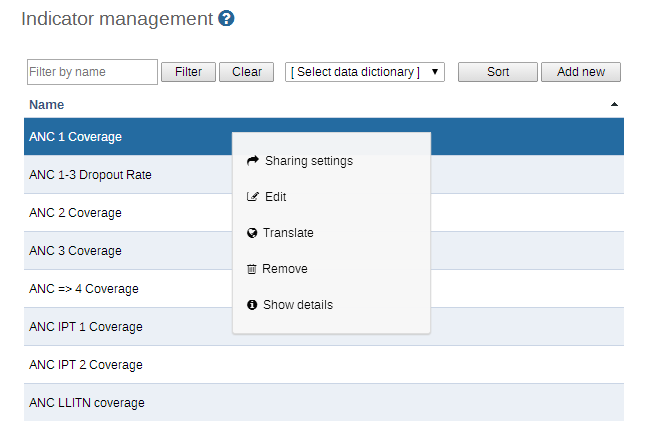
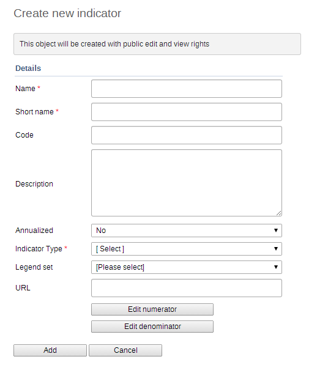
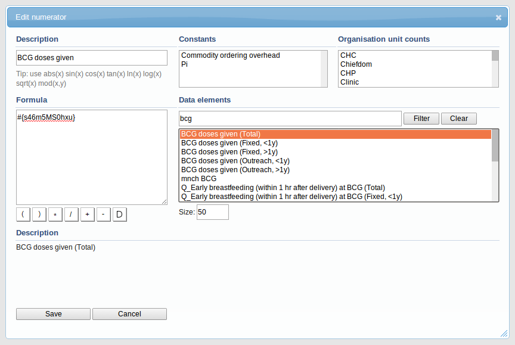
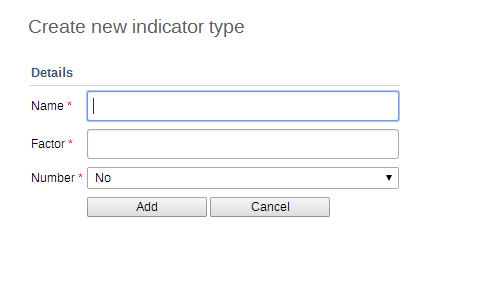
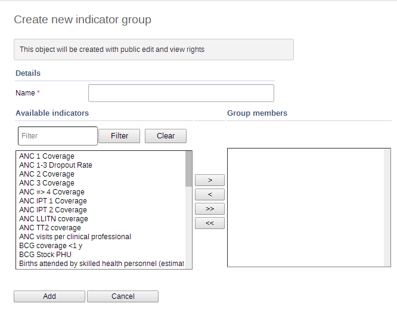

Table of Contents
Indicators can be maintained by choosing "Maintenance->Data elements and indicators" from the main menu. The following screen will appear.
|  |
From the left side menu or by scrolling down the central area you can access the various sections on Indicators;
Indicator, Indicator Type, Indicator Group, Indicator Group Editor, and Indicator Group Set.
Indicator maintenance functions essentially the same as each of the respective sections in the previous section on data elements. The basic operations will be described in this section, but the reader should refer to the corresponding sections above for detailed instructions.
Indicators are composed of multiple data elements, and typically consist of a numerator and denominator. Calculated totals do not have a denominator. Indicators are never entered directly in DHIS2 through data entry, but are derived from combinations of data elements and factors. Indicators are used to calculate coverage rates, incidence and other values are a result of data element values that have been entered into the system.
To access the Indicator maintains page, press Maintenance -> Data Element and Indicators and then pressing "Indicator" from the left pane or the main dialog. Similar to data elements, you can add, delete, modify and view extra information about the indicators in the system.
|  |
Indicators can be filtered by entering the name or a part of the indicator name in the "Filter by name" field. Similar to data elements, indicators can be added by pressing the "Add new" button. Other operations available from the context menu (available by clicking on the indicator name) are as follows.
-
Sharing settings: Assign sharing privileges to user groups.
-
Edit: Edit an existing indicator
-
Translate: Translate an existing indicator to a different language.
-
Remove: Delete an existing indicator.
-
Show details: Get detailed information about this indicator.
To add a new indicator, click the "Add new" button. The following screen is displayed.
|  |
Each of the fields marked with an asterisk are compulsory. A description of each field is provided below.
-
Name: The full name of the indicator, such as "Incidence of confirmed malaria cases per 1000 population"
-
Short name: An abbreviated name of the indicator such as "Inc conf. malaria per 1000 pop". The short name must be less than or equal to 25 characters, including spaces.
-
Code: In many countries, indicators are often assigned a particular code. This code can be entered here.
-
Description: A brief, informative description of the indicator and how it is calculated can be entered here.
-
Annualized: Determines whether or not an annualization factor is applied during the calculation of the indicator. Typically, annualized indicator's numerator are multiplied by a factor of 12, and the denominator is for instance a yearly population figure. This allows for monthly coverage values to be calculated with yearly population figures.
-
Indicator type: This field will determine a factor that will automatically be applied during the calculation of the indicator. Possible choices are determined by the Indicator Types (described below). For instance, a "Percent" indicator will automatically be multiplied by a factor of 100 when exported to the data mart, so that it will display as a percentage.
-
Legend set: Define a legend set for this indicator. Refer to the section on "GIS" for more information about legend sets.
-
URL: Can be used as a link to an indicator registry, where a full metadata description of the indicator can be made available.
To define the numerator and denominator, simply press the respective button, and the following dialogue will be displayed.
|  |
Essentially, an indicator is a formula that can be composed of multiple data elements, constants, organisation unit group counts and mathematical operators. In order to define a new indicator proceed with the following steps.
-
A description of the numerator/denominator must be provided in the "Description field". This should provide a clear description of the numerator/denominator. This field is required.
-
Define the formula of the indicator by selecting the data elements that should compose the numerator from the "Data elements" field. Simply select the data element, and double click it. It will now appears as part of the formula. You formula must be mathematically valid, including the proper use of parentheses when necessary. You can double click on each of the mathematical operator buttons below the indicator formula definition to add them to your formula.
-
Click the Save button to save all changes to the numerator. Click cancel to discard any changes that you have made.
-
Follow the same procedure in order to define the denominator.
The components of an indicator formula are listed below.
-
Data elements: Will be substituted by the data value captured for the data element.
-
Constants: Constants are numerical values which will remain the same for all indicator calculations. This is useful in order to have a single place to change values that might change over time.
-
Days: A special operator "D" is available in formulas. This operator will always provide the number of days for a given indicator calculation. As an example, if you wish to calculate the "Percentage of time vaccine refrigerator was non-functional", you could define the numerator as ("D-"Number of days vaccine refrigerator was available"")/"D". For example, if the fridge was available 25 days in June, the indicator would be calculated as (30-25/25)*100=17%. If you were however to calculate the total for Quarter 1, the number of days ("D") would be equal to 31+28+31=90. Thus, the "D" parameter will always be the number of days in the period of interest.
-
Org unit group counts: Org unit groups can be utilized in formulas and will be substituted by the number of organisation units in the group. During aggregation, the org units in the group will be intersected with the part of the org unit hierarchy being requested. As an example, this lets you use the number of public facilities in a specific district in indicators. This is useful e.g. when creating facility infrastructure surveys and reports.
-
Constants: Indicators may make use of constants. Constants are static values which will be applied uniformly to the indicator formula. Constants are applied AFTER data element values have been aggregated.
Indicator types simply define a factor that will be applied during aggregation. Indicator values that are calculate during a data mart export or report table generation process will appear properly formatted, and will therefore not require an additional multiplier (e.g. 100 in the case of percents) for the values to appear correctly formatted.
The indicator type maintenance panel has all of the same functions (Add new, Edit, Translate, Delete, and Information) as the Indicator maintenance section.
There are only two fields that need to be filled-in to create an indicator type, Name and Factor, as seen below. Name refers to the Indicator type (e.g. Per cent, Per thousand, Per ten thousand, etc). The factor is the numeric factor that will be multiplied to the indicator formula during the calculation of the indicator.
|  |
![[Note]](resources/images/admon/note.png) | Note |
|---|---|
|
As of version 2.4 of DHIS2, the "Calculated data element" object has been deprecated. Instead, a calculated data element can be created by creating an indicator type with a factor of "1" and by setting the "Number" option to "Yes". The effect of setting the "Number" option to "Yes" will be that the indicator will effectively not have a denominator. You will therefore only be able to define a numerator, which will serve as the formula of the calculated data element. |
Indicator groups function essentially the same as data element groups. Multiple indicators can be assigned to a group for easy filtering and analysis. To assign indicators to groups, simple press Maintenance->Data elements and indicators->Indicator groups. See the section on Data element groups for detailed instructions of how to use this module.
The indicator group editor module functions essentially the same as the data element group editor module, except on indicators. You can easily rearrange the groups that indicators belong to with this module. To access it, choose To assign indicators to groups, simple press Maintenance->Data elements and indicators->Indicator group editor from the main menu. See the section on Data element group editor for further instructions.
Similar to data element group sets, indicator group sets serve to create combined groups of similar indicators. For instance, you might have a group of indicators called "Malaria" and "Leishmaniasis". Both of these groups could be combined into a group set called "Vector-borne diseases". Indicator groups sets are used during analysis of data to combine similar themes of indicators. To access this module choose Maintenance->Data elements and indicators->Indicator group sets from the main menu and then press "Add new". The following dialogue will appear.
|  |
Supply a name for the indicator group set, and then move the desired members from the "Available Indicator Groups" to the "Group members". Click "Add" to save your changes and "Cancel" to discard any changes.
| Note |
|---|---|
|
Similar to data element and indicator group sets, typically, indicator groups should be exclusive, meaning that one indicator group should not belong to multiple indicator group sets. |